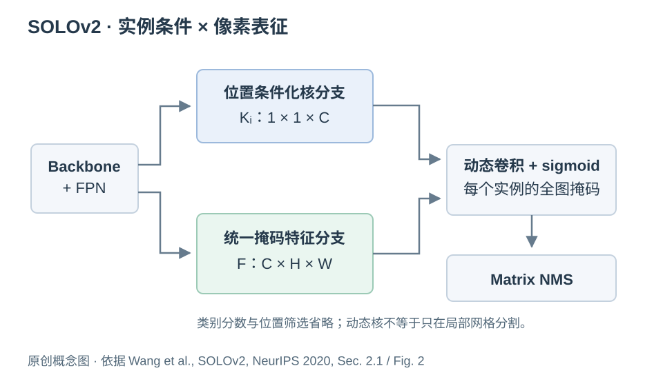
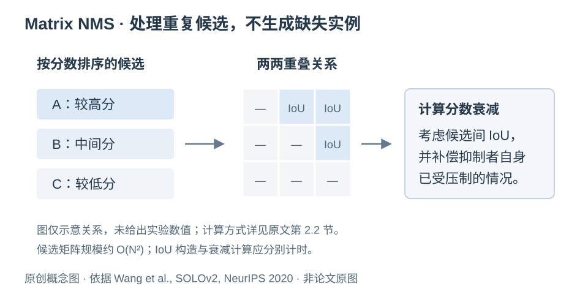

SOLOv2：动态掩码生成与 Matrix NMS
把每个实例的完整掩码预测，重写为动态核与共享特征的组合
论文：SOLOv2: Dynamic and Fast Instance Segmentation
作者：Xinlong Wang, Rufeng Zhang, Tao Kong, Lei Li, Chunhua Shen
发表状态：正式发表 · NeurIPS 2020
版本说明：arXiv 首次提交于 2020-03-23；本文实验数值采用 NeurIPS 2020 正式论文。arXiv 是全文渠道，不代表仅为预印本。
论文信息 / arXiv · 阅读全文 PDF · 正式出版记录 · 作者官方代码
代码许可：仓库 LICENSE 标注 non-commercial purposes；作者另在 AdelaiDet 提供实现，许可应按实际选用仓库检查。论文图片的权限另行核验。
1. SOLO 之后还缺什么
SOLO 已经证明位置槽位可以直接关联实例掩码，但 vanilla 方案需要为大量槽位输出完整的空间掩码。SOLOv2 进一步把掩码生成分成核预测与特征学习，并引入统一的高分辨率特征及 Matrix NMS。论文将改进分别对应到表示效率、掩码细节和后处理成本。[1]
这条改进路线的价值，在于每个设计都有明确作用对象。动态核减少逐槽位生成完整掩码的表示负担；共享特征承担像素级信息；NMS 处理重复候选。理解时应保留这些边界，不能把全部性能收益统一解释为“更强的注意力”或“更好的融合”。
2. 动态核与共享特征的机制
在 SOLOv2 中，一个有效位置输出实例相关的卷积核 Ki，特征分支从金字塔特征构建共享掩码特征 F。二者卷积产生实例掩码。论文采用 1×1 动态核的主要配置时，可写成下式；为突出表示关系，这里省略 batch 维度。[1]
zi(x,y) = Σc Ki,c Fc(x,y)
Mi(x,y) = sigmoid(zi(x,y))

一个核不是一个像素标签，也不是只在网格内部运行的局部分类器。它对整张共享特征图进行条件化读出。坐标信息帮助核与特征建立位置对应；边界细节仍取决于 F 是否保存了可区分的空间证据。动态核本身不会自动恢复共享特征中已经丢失的窄间隙。
本文的代数观察：将空间展平后，N 个实例的 logit 可写为 Z=KF。对于某张固定图像，其线性 logit 矩阵满足 rank(Z)≤C。这个结论仅描述 1×1 线性读出的形式；F 本身由非线性网络根据图像产生，sigmoid 后的矩阵也不能直接沿用该秩界。因此，它既不证明模型表达不足，也不意味着 C 个通道最多只能分 C 个实例。它提供的是一个诊断角度：相邻核难分，究竟因为 K 缺少差异，还是 F 缺少分隔信息？
| 方法 | 实例条件来自哪里 | 像素表征怎样被使用 |
|---|---|---|
| Mask R-CNN | 候选框与 RoI | 在 RoI 对齐后的局部特征中预测掩码，再映射回图像。 |
| Vanilla SOLO | 尺度层与位置槽位 | 位置关联的输出通道直接承载全图实例掩码。 |
| SOLOv2 | 位置槽位预测的动态核 | 用实例核读取统一的全图掩码特征。 |
因此，仅仅“引入动态卷积”并不能概括 SOLOv2 的贡献；更完整的解释是位置条件化的实例核、共享高分辨率像素表征和配套掩码后处理共同形成直接实例分割流程。反过来，如果新方法只是替换 F 的融合模块，也不能据此声称已经改变了槽位分配或实例竞争机制。
3. Matrix NMS 如何处理重复候选
多个槽位可能预测同一目标，需要根据分数和掩码重叠抑制冗余。Matrix NMS 将按分数排序后的候选间 IoU 组织成矩阵，并根据较高分候选产生分数衰减；它还考虑某个抑制者自身已经受到更高分候选压制的情况，缓解单纯并行抑制中的连锁影响。它是一次矩阵化的软衰减计算，不是逐个选择候选的贪心循环。[1]

需要区分的能力：NMS 调整候选分数，不会生成训练时缺失的实例，也不直接重写每个像素的归属。在密集细胞核中，两个真实例因预测外扩而具有较高 IoU 时，仍可能出现误抑制；如果一个候选已经合并了两个核，单纯 NMS 通常不能把它拆成两个。后处理效率与实例分离能力应分别验证。
并行也不等于计算量与实例数量无关。候选间 IoU 矩阵规模随候选数 N 约为 O(N²)，构造 IoU 还涉及掩码空间维度。密集场景应报告阈值筛选与 top-k 后的实际候选数，以及 IoU 构造、衰减计算和整体推理各自的成本。
4. 创新主张的实验证据
下表来自 NeurIPS 正式全文，均为作者报告、本文未复现。主结果与消融分属不同设置；AP 为 COCO 百分数尺度。选取这些行是为了把设计与证据对应起来，而非复刻完整结果表。[1]
| 原文比较 | 结果及设置 | 解释边界 |
|---|---|---|
| SOLO → SOLOv2，同为 ResNet-101-FPN | COCO test-dev AP：37.8 → 39.7 | 支持整体改进；不隔离动态核、特征与 NMS 各自贡献。 |
| 1×1×256 与 1×1×512 动态核 | COCO val2017 AP：37.8 / 37.7 | 通道更宽没有继续提高该配置精度；不是所有场景的最优通道数定理。 |
| Separate → Unified 掩码特征 | COCO val2017 AP：37.3 → 37.8 | 支持统一特征方案；不能单独归因于某一种融合算子。 |
| Hard-NMS → Matrix NMS | COCO val2017 AP：36.3 → 36.6；NMS 步骤耗时 9 ms → <1 ms | 此计时排除 IoU 矩阵计算，不能解读为完整后处理或端到端耗时。 |
尤其值得借鉴的是消融与具体主张的对应关系：改变动态核形状检验读出形式；比较显式坐标检验位置条件；切换共享特征组织检验像素表征；缓存同一候选再切换 NMS 则更接近隔离后处理因素。若在新论文里只报告“添加 A、再添加 B”的递增表，很难排除参数量、训练策略或分辨率同时变化的解释。
另一个细节是公平比较：SOLOv2 的端到端速度与特定硬件、输入和模型配置绑定，NMS 消融又采用更窄的计时范围。把二者拼成一句“整套系统后处理只需不到 1 ms”，会造成误读。面向高密度细胞核时，还需要单独测量不同实例数量下的延迟和显存。
5. 细胞核任务中的可验证研究问题
以下是本文分析与实验建议，非原文医学实验结论。可以将失败拆成候选生成、掩码分离、候选筛选三步。先检查每个 GT 在 NMS 前是否存在足够好的匹配候选，再检查是否被抑制。若候选已经漏检，修改 NMS 很难补救；若高质量候选存在而最后消失，继续增强特征未必针对真正瓶颈。
对动态表示，还应把实例身份差异与局部边界证据区分开。相邻两核的核向量 K 可以明显不同，但如果 F 在狭窄接触区几乎没有差异，最终边界仍可能混淆。相反，F 已含分隔证据却被相似的 K 读取成重复掩码，则需要检查位置条件和核生成。只画一张漂亮的特征热图不足以区分这两种情形。
| 研究问题 | 可执行的诊断与对照 | 需要防止的误读 |
|---|---|---|
| 共享特征是否丢失小核间隙？ | 固定核分支与分配规则，对比输出 stride、简单插值和参数量相近的可学习细节恢复；按核面积与最小间距分组。 | 插值只改变采样，不能保证恢复信息；整体 AP 提升不等于接触区分离更好。 |
| 实例核是否缺乏区分性？ | 统计邻近真核匹配候选的核余弦相似度、掩码 IoU 与位置距离；与非邻近实例对照，并做针对性干预。 | 相似度相关不是因果；通道尺度与特征重参数化也会影响解释。 |
| 边界增强是否只是增加容量？ | 对比普通卷积、等参数融合和边界相关机制；再移除额外监督，做结构×监督的交叉消融。 | 额外标签、损失与结构一起增加时，无法识别收益来自哪一项。 |
| 实例竞争是否减少粘连？ | 固定候选，比较独立 sigmoid 与带背景、可拒绝分配的归属方案；统计接触区错误、merge / split 与错误排斥。 | 强制互斥可能在候选漏检或候选重复时放大错误；必须同时保留召回与拒绝机制。 |
| Matrix NMS 是否适合高密度？ | 缓存候选，改变阈值和 top-k，按候选数计时；拆分 IoU、抑制、全流程耗时。 | 不能用稀疏自然图像中的局部计时推断细胞核图像吞吐量。 |
若加入 reliability 或 disagreement 机制，首先要给变量可观测的定义。例如，“两种尺度的预测差异”是差异信号，不天然等于“可靠性”；它可能来自尺度偏好、错位、噪声或真实边界。应检验该信号与实际实例错误、边界错误的关系，并比较普通可学习门控、随机或打乱信号、停止梯度等对照。只有这些实验排除了替代解释，才适合提出更强的机制主张。
SOLOv2 尚未从表示上保证单槽位可表达多个同尺度实例，也没有显式保证相邻输出掩码的像素归属一致性。动态核和共享特征提供了清晰的干预位置；怎样补足这些能力、会带来哪些新错误，仍需面向目标场景设计实验。相关方向是否已有充分研究，需另做新颖性检索，本篇不作首创性判断。
6. 来源与图像说明
- Xinlong Wang, Rufeng Zhang, Tao Kong, Lei Li, Chunhua Shen. SOLOv2: Dynamic and Fast Instance Segmentation. Advances in Neural Information Processing Systems 33, 2020. 正式出版记录；正式全文 PDF；arXiv 与版本记录。机制参见第 2 节与 Fig. 2，证据参见 Table 1、3。
- 作者官方 SOLO / SOLOv2 仓库；论文代码入口也指向作者团队的 AdelaiDet。实际复现应锁定实现、配置、依赖、权重与提交版本，不能混用不同仓库结果。
- 本次检查了作者项目、仓库许可与论文入口，未确认论文原图适用于本站的明确转载许可，因此使用独立构图的原创机制图。代码 LICENSE 不能替代论文图片许可。完整审查记录见 图片来源记录。
- 对比来源：SOLO, ECCV 2020；Mask R-CNN, ICCV 2017。本站前篇：SOLO：用位置定义实例身份。